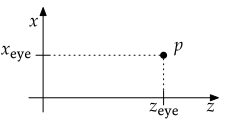
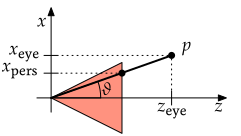
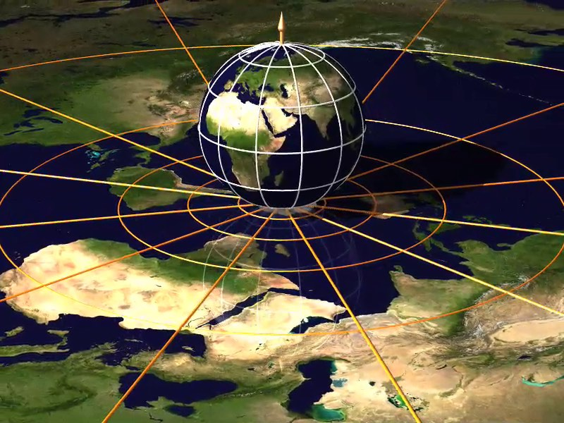

The previous chapters have discussed various aspects of higher-dimensional representations and operations. As powerful as they can be, these representations and operations are generally incompatible with current 2D/3D software and are also hard to imagine and visualise. In order for them to be used in practice, it is therefore important to have methods to extract meaningful 2D and 3D subsets from a higher-dimensional model.
While fully developing methods and algorithms to do so is outside the scope of this thesis, steps towards formalising this problem and looking for potential solutions were made within the context of this thesis, and they are thus documented here. The chapter starts by giving some of the background behind the problem in §9.1, explaining at a high level the process to extract lower-dimensional information from a higher-dimensional model. Using a simple camera analogy common in computer graphics, §9.2 explains how a 3D viewpoint is placed in a 3D scene through the application of different transformations, capturing a 2D view of it by applying a given projection. §9.3 uses this analogy to give an intuitive description of how this process extends to higher dimensions, later formulating a simple dimension-independent generalisation of the orthographic and perspective projection methods and explaining other projection possibilities. Finally, §9.4 concludes with some ideas on the value of these methods, what pieces are still missing and how the overall process could be implemented.
9.1 Background
The process to obtain a lower-dimensional subset of a higher-dimensional dataset can be regarded as a function that maps a subset of \(\mathbb{R}^n\) to a subset of \(\mathbb{R}^m\), \(m < n\), which is obtained by cutting through the dataset in a geometrically meaningful way. For instance, it is possible to cut orthogonally to an axis for a snapshot at one point in space/time, or obliquely for a subset that combines different parametrised characteristics, such as the evolution of different parts of an area in time.
The process to extract these slices can be conceived as consisting of two broad steps: (i) optionally selecting a subset of the objects in the scene, and (ii) applying a transformation that projects this subset to a lower dimension. In computer graphics, these steps would normally be followed by rendering the selected and projected objects, obtaining a raster image as an end-product.
Selecting a subset of a dataset is useful to bring certain parts of the dataset into view. For instance, this is commonly applied to parts of a dataset that are normally not visible, such as the interior of an object. It is also widely used to reduce the difficulty of the overall problem and avoiding the need to make unnecessary computations, such as projecting and rendering parts of the dataset that will be clearly out of view.
This selection process can be relatively simple, such as using all objects that are within a certain bounding box, that are within a certain distance of a point, or being of a given dimension. For instance, 3D rendering programs and 3D games will usually only render the 2D faces of the objects lying (approximately) within a region (e.g. frustum), not their (filled-in) volumes or any 2D faces that are clearly out of view.
However, more complex selection processes are useful in many instances, often requiring specialised data structures and geometric algorithms. In particular, a great number of visibility determination algorithms have been developed [Hughes et al., 1998, Ch. 36, which solve various approximations of the surfaces that are visible in a scene. Another example is a selection process is the computation of cross-sections of volumetric 3D objects, which requires the computation of a Boolean set intersection of a point set with a plane, such as the typical conic sections shown in Figure 9.1.

(a)
(b)
(c)
(d)
Figure 9.1: Four types of conic sections: (a) circle, (b) ellipse, (c) parabola and (d) hyperbola. These are obtained by the Boolean set intersection of a pair of cones with a plane.↩
Projecting the selected subset yields a given view of the scene and reduces the actual dimension of the objects being represented. Many types of projections for this purpose can be defined, usually in the form of a transformation that is applied to the objects. For example, orthographic and perspective projections (Figure 9.2) can directly map an \(n\)D scene to an \(m\)D subspace. However, more complex schemes are also possible, such as projecting first inwards/outwards to an \(m\)-sphere (for a hypothetical \((m+1)\)D Nef polyhedra implementation), then to an \(m\)D subspace (e.g. using an equiangular projection as shown in Figure 9.3).
(a)
(b)
Figure 9.2: The (a) orthographic projection projects objects orthogonally to the projection plane. The (b) perspective projection projects objects in manner such that those that are nearby appear comparatively larger than farther away. Note how parallel lines (e.g. wall edges) remain parallel in the former but not in the latter.↩
Many of these projections can be done with techniques that are closely related to computer graphics, which has been dealing with the case of converting a 3D scene into a 2D image for decades, and less frequently covering higher-dimensional cases as well. In this sense, it is useful to consider the same camera analogy that is often used in computer graphics, where a movable camera125 captures a scene as seen from a particular viewpoint. In a higher-dimensional setting, this analogy would consist of an \(m\)D camera capturing an (\(m\)D) view of an \(n\)D scene. While this is somewhat more difficult to imagine, this analogy emphasises three important aspects that remain true in any dimension:
- Moving the camera around a scene and orienting it makes it possible to capture the data from any given viewpoint. Such a viewpoint can be parametrised—and thus easily defined and stored—by a set of values containing its location and orientation.
- It is possible to obtain different views—intuitively corresponding to camera lenses—through various projections. These can also have their own customisable parameters, such as their field of view.
- Despite the fact that the dimension of the data is reduced (from \(n\) to \(m\)), characteristics that would seem to have been lost in this process can be preserved in the form of attributes and used for further computations. For instance, in computer graphics, the distance from an object to the camera (i.e. the depth) is regularly used for computations of 3D-to-2D projections, either as a simple computation where the objects that are nearer (along a line of sight) occlude those that are farther away, or for more complex effects, such as transparency and reflectivity. In cartography, hypsometric tints, shaded relief, contour lines are all frequently used to encode the height information in a 2D map (Figure 9.4).
Continuing with the camera analogy, it is useful to consider the \(n\)D scene as consisting of a set of 0D–\(n\)D objects. In the context of this thesis, these would be represented as an \(n\)-dimensional simplicial complex or cell complex with linear geometries, such that every vertex in the map is embedded in a location in \(\mathbb{R}^n\). The simplices/cells of the complex can be translated, rotated or scaled, if necessary, using the operations described in §5.2. They can then be individually projected by the camera, possibly taking into account occlusion or other visual effects, in order to obtain the \(m\)D scene.
This projection is simplest when two conditions are met: (i) the objects have linear geometries that are stored as coordinates attached to their vertices (as in this thesis), and (ii) the projection transformation preserves the linearity of the objects. In this case, it is only necessary to apply the transformation to every vertex individually.
However, even when one or both of these conditions are not met, it is possible to obtain a good approximation by first subdividing a simplex/cell into small simplices/cells (up to an arbitrary \(\varepsilon\) threshold), assuming that linear geometries will remain approximately linear and projecting only the vertices of the subdivided complex. This subdivision and approximation method is used for the cover of this thesis and the example in Figure 9.10.
The following sections will therefore assume that the data to be projected consists only of a set of \(k\) points with \(n\) coordinates, which is stored as a \(k \times n\) matrix. These will be given new coordinates in \(\mathbb{R}^m\) by applying one or more operations expressed in terms of linear algebra.
9.2 3D to 2D projections
Projecting a set of 3D objects into a 2D view is one of the most common tasks in computer graphics. As such, most computer graphics books derive their own versions of the transformations required to apply different types of projections, most of which are interchangeable but are often parametrised in different ways.
From a practical perspective, the OpenGL Programming Guide (better known as the Red Book) [Shreiner et al., 2013] provides very intuitive forms of 3D-to-2D perspective and orthographic projections, which are based on defining a viewing frustum or box where the objects to be viewed should be located/placed. This can be achieved by translating, rotating and scaling the objects as described in \refse{se:ndmath}.
Assuming a setup as shown in Figure 9.5, where a camera is placed at \(z = 0\) and pointing towards higher values on the \(z\) axis, with parameters defining the \(x\) coordinates for the left (\(l\)) and right (\(r\)), \(y\) coordinates for the bottom (\(b\)) and top (\(t\)), and \(z\) coordinates for the near (\(n\)) and far (\(f\)) planes, \citet[Ch.~5]{Shreiner13} define a transformation that applies a perspective projection \(P_p\) and an orthographic projection \(P_o\) as:
(a)
(b)
Figure 9.5: The left (\(l\)), right (\(r\)), bottom (\(b\)), top (\(t\)), near (\(n\)) and far (\(f\)) planes that form (a) a perspective projection’s frustum and (b) an orthographic projection’s box.↩
\begin{align*} P_p &= \begin{bmatrix} \frac{2n}{r-l} & 0 & \frac{2(l+r)}{r-l} & 0 \\ 0 & \frac{2n}{t-b} & \frac{2(t+b)}{t-b} & 0 \\ 0 & 0 & \frac{f+n}{n-f} & \frac{-2fn}{f-n} \\ 0 & 0 & -1 & 0 \\ \end{bmatrix} & P_o &= \begin{bmatrix} \frac{2}{r-l} & 0 & 0 & \frac{l+r}{l-r} \\ 0 & \frac{2}{t-b} & 0 & \frac{b+t}{b-t} \\ 0 & 0 & \frac{-2}{f-n} & \frac{n+f}{n-f} \\ 0 & 0 & 0 & 1 \\ \end{bmatrix} \end{align*}
However, as this thesis attempts to obtain a dimension-independent formulation, it is more interesting to consider a somewhat more complex method that can be extended more readily to higher dimensions. Foley and Nielson [1992] and Hughes et al. [1998, Ch. 13], among others, start from the definition of a triplet of vectors \(\hat{x}\), \(\hat{y}\) and \(\hat{z}\), which are computed from a point \(from\) where the camera is located, a point \(to\) that the camera directly points towards, and an arbitrary vector \(\overrightarrow{up}\) pointing approximately upwards126. The latter vector is necessary because there is still one degree of rotational freedom even as the camera is pointing towards \(to\). The unit vectors \(\hat{x}\), \(\hat{y}\) and \(\hat{z}\) correspond to the \(x\), \(y\) and \(z\) axes from the camera’s perspective and are defined as:
\begin{align*} \hat{x} &= \frac{\hat{z} \times \overrightarrow{up}}{\left\lVert{}\hat{z} \times \overrightarrow{up}\right\rVert} & \hat{y} &= \hat{x} \times \hat{z} & \hat{z} &= \frac{to-from}{\left\lVert{}to-from\right\rVert} \end{align*}
Note that if \(\overrightarrow{up}\) is orthogonal to \(\hat{z}\), \(\hat{y}\) defines the up direction as a normalised \(\overrightarrow{up}\). If they are not orthogonal, \(\hat{y}\) defines the up direction differently from \(\overrightarrow{up}\).
Based on the three vectors \(\hat{x}\), \(\hat{y}\) and \(\hat{z}\), a \(n \times 3\) matrix of \(n\) point coordinates in terms of the scene \(P_\mathrm{world}\) (world coordinates) can be converted into a matrix of points coordinates in terms of the camera (eye coordinates). This would be computed as:
\begin{equation*} P_\mathrm{eye} = \begin{bmatrix} P_\mathrm{world} - from \end{bmatrix} \begin{bmatrix} \hat{x} & \hat{y} & \hat{z} \end{bmatrix} \end{equation*}
In a 3D to 2D orthographic projection, the \(x\) and \(y\) coordinates of this matrix, here denoted as \(x_\mathrm{eye}\) and \(y_\mathrm{eye}\), are directly usable as the coordinates of the points in \(\mathbb{R}^2\). As shown in Figure 9.6, the \(z_\mathrm{eye}\) coordinates represent the distance between the point and the projection plane, i.e. the camera, and thus define the depth. Points with positive \(z_\mathrm{eye}\) values close to zero are thus close to the camera while points with larger \(z_\mathrm{eye}\) values are farther away. Note that negative \(z_\mathrm{eye}\) values mean that the point lies behind the camera, and so these would be usually omitted.
For visualisation purposes, it is often convenient to normalise the coordinates so that the range of the \(x\) and \(y\) coordinates extend as much as possible along a given frame, resulting in objects that are not too small or too large. This can be accomplished by finding the point that is farthest along the \(\hat{x}\) and \(\hat{y}\) compared to the desired aspect ratio of the frame in which they should fit. As Foley and Nielson [1992] point out, in the case of the square \([-1, 1] \times [-1, 1]\), which is commonly used, point coordinates can be normalised by dividing them by the longest distance of any point to the \(to\) point.
In a 3D to 2D perspective projection, objects are projected towards a point (the camera viewpoint’s coordinates) rather than a plane. This results in new \(x_\mathrm{pers}\) and \(y_\mathrm{pers}\) coordinates that are scaled inwards in inverse proportion to the depth, which is here defined as the distance between a point and the camera viewpoint’s coordinates. Intuitively, this means that if an object is \(n\) times farther than another identical object, it is depicted \(n\) times smaller, or \(\frac{1}{n}\) of its size.
As shown in Figure 9.7, this distance can be easily computed as the hypotenuse of a right-angled triangle, where the adjacent cathetus of an angle \(\vartheta\) is given by the (orthogonal) distance of the point to the projection plane (\(z_\mathrm{eye}\)), the opposite cathetus is given by the point’s world coordinates (\(x_\mathrm{eye}\) or \(y_\mathrm{eye}\)), and \(\vartheta\) is the viewing angle between \(\hat{z}\) (which lies on a line that passes through \(from\) and \(to\)) and the line between the \(to\) point and the current point. New \(x_\mathrm{pers}\) and \(y_\mathrm{pers}\) coordinates are thus computed using this angle as follows:
\begin{align*} x_\mathrm{pers} &= \frac{x_\mathrm{eye}}{z_\mathrm{eye} \tan(\vartheta / 2)} & y_\mathrm{pers} &= \frac{y_\mathrm{eye}}{z_\mathrm{eye} \tan(\vartheta / 2)} \\ \end{align*}
There are many other types of projections that can be defined and can be interesting in higher dimensions, such as the equirectangular projection shown in Figure 9.3 where evenly spaced angles along a rotation plane (§5.2) can be directly converted into evenly spaced coordinates. However, they will not be discussed here. See [Salomon, 2011, Chs. 5–7] for a good reference on how to apply many different types of linear and non-linear projections.
9.3 Higher-dimensional projections
Based on the 3D to 2D projection methods described by Foley and Nielson [1992], Hollasch [1991] extends them to perform 4D to 3D orthographic and perspective projections. This section further extends these methods to describe the \(n\)-dimensional to (\(n-1\))-dimensional case, changing some aspects to better explain the geometric meaning of each vector.
First, starting from a point \(from \in \mathbb{R}^n\) where the camera is located, a point \(to \in \mathbb{R}^n\) that the camera directly points towards, and a set of \(n-2\) vectors \(\overrightarrow{v}_1, \ldots, \overrightarrow{v}_{n-2}\) in \(\mathbb{R}^n\) that are all linearly independent from each other and from the vector \(to - from\), it is possible to define a set of unit vectors \(\hat{x}_0, \ldots, \hat{x}_{n-1}\) that define the axes \(x_0, \ldots, x_{n-1}\) of a coordinate system in \(\mathbb{R}^n\) as:
\begin{align*} \hat{x}_0 &= \frac{\overrightarrow{v}_1 \times \cdots \times \overrightarrow{v}_{n-2} \times \hat{x}_{n-1}}{\begin{Vmatrix} \overrightarrow{v}_1 \times \cdots \times \overrightarrow{v}_{n-2} \times \hat{x}_{n-1} \end{Vmatrix}} \\ \hat{x}_i &= \frac{\overrightarrow{v}_{i+1} \times \cdots \times \overrightarrow{v}_{n-2} \times \hat{x}_{n-1} \times \hat{x}_0 \times \cdots \times \hat{x}_{i-1}}{\begin{Vmatrix} \overrightarrow{v}_{i+1} \times \cdots \times \overrightarrow{v}_{n-2} \times \hat{x}_{n-1} \times \hat{x}_0 \times \cdots \times \hat{x}_{i-1} \end{Vmatrix}}, \mathrm{\quad{}for } 0 < i < n-2 \\ \hat{x}_{n-2} &= \hat{x}_{n-1} \times \hat{x}_0 \times \cdots \times \hat{x}_{n-2} \\ \hat{x}_{n-1} &= \frac{to - from}{\begin{Vmatrix} to - from \end{Vmatrix}} \\ \end{align*}
The vector \(\hat{x}_{n-1}\) is the first that needs to be computed and is oriented along the line from the camera (\(from\)) and the point that it is oriented towards (\(to\)). Afterwards, the vectors are computed in order from \(\hat{x}_0\) to \(\hat{x}_{n-2}\) as normalised \(n\)-dimensional cross products of \(n-1\) vectors. These contain a mixture of the input vectors \(\overrightarrow{v}_1, \ldots, \overrightarrow{v}_{n-2}\) and the computed unit vectors \(\hat{x}_0, \ldots, \hat{x}_{n-1}\), starting from \(n-2\) input vectors and one unit vector for \(\hat{x}_0\), and removing one input vector and adding the previously computed unit vector for the next \(\hat{x}_i\) vector. Note that if \(\overrightarrow{v}_1, \ldots, \overrightarrow{v}_{n-2}\) and \(\hat{x}_{n-1}\) are all orthogonal to each other, \(\forall 0 < i < n-1\), \(\hat{x}_i\) is simply a normalised \(\overrightarrow{v}_i\).
Similarly to the 3D-to-2D case, the vectors \(\hat{x}_0, \ldots, \hat{x}_{n-1}\) can be used to transform an \(m \times n\) matrix of \(m\) \(n\)D points in world coordinates \(P\) into an \(m \times n\) matrix of \(m\) \(n\)D points in eye coordinates \(E\) by applying the following transformation:
\begin{equation*} E = \begin{bmatrix} P - from \end{bmatrix} \begin{bmatrix} \hat{x}_0 & \cdots & \hat{x}_{n-1} \end{bmatrix} \end{equation*}
As before, if \(E\) has rows of the form \(\begin{bmatrix} e_0 \cdots & e_{n-1} \end{bmatrix}\) representing points, \(e_0, \ldots, e_{n-2}\) are directly usable as the coordinates in \(\mathbb{R}^{n-1}\) of the projected point in an \(n\)-dimensional to (\(n-1\))-dimensional orthographic projection, while \(e_{n-1}\) represents the distance between the point and the projection (\(n-1\))-dimensional subspace, which can be used for visual cues127. The coordinates along \(e_0, \ldots, e_{n-2}\) could be made to fit within a certain bounding box by computing their extent along each axis, then scaling appropriately using the extent that is largest in proportion to the extent of the bounding box’s corresponding axis.
For an \(n\)-dimensional to (\(n-1\))-dimensional perspective projection, it is only necessary to compute the distance between a point and the camera as the hypotenuse of a right-angled triangle by taking into account the viewing angle \(\vartheta\) between \(\hat{x}_{n-1}\) and the line between the \(to\) point and every point. This situation is the same as that of the 3D-to-2D case shown previously in Figure 9.7 and results in new \(e_0^\prime, \ldots, e_{n-2}^\prime\) coordinates that are shifted inwards. The coordinates are computed as:
\begin{equation*} e_i^\prime = \frac{e_i}{e_{n-1} \tan{\vartheta / 2}}, \mathrm{\quad{}for } 0 \leq i \leq n-2 \end{equation*}
The (\(n-1\))-dimensional coordinates generated by this process can then be recursively projected down to progressively lower dimensions using this method. The objects represented by these coordinates can also be discretised into images of any dimension. For instance, Hanson [1994] describes how to perform many of the operations that would be required, such as dimension-independent clipping tests and ray-tracing methods.
In addition to orthographic and perspective projections, there are other interesting projections that can be applied in higher dimensions. In fact, since we lack an intuitive understanding of higher dimensions, there is little benefit in using projections that work in similar ways as the ways in which we mentally process 3D information. For instance, Jenn 3D128 visualises polyhedra and polychora by first projecting them inwards/outwards to the volume of a 3-sphere129, resulting in curved edges, faces and volumes. In a dimension-independent setting, this projection can be easily done by considering the angles \(\vartheta_0, \ldots, \vartheta_{n-2}\) in an \(n\)-dimensional spherical coordinate system. Steeb [2011, §12.2] formulates such a system as:
\begin{align*} r &= \sqrt{x_0^2 + \cdots + x_{n-1}^2} \\ \vartheta_i &= \cos^{-1} \left( \frac{x_i}{\sqrt{r^2 - \sum_{j=0}^{i-1} x_j^2}} \right), \mathrm{\quad{}for } 0 \leq i < n-2 \\ \vartheta_{n-2} &= \tan^{-1} \left( \frac{x_{n-1}}{x_{n-2}} \right) \\ \end{align*}
It is worth to note that the radius \(r\) of such a coordinate system is a measure of the depth with respect to the projection \((n-1)\)-sphere \(S^{n-1}\) and can be used similarly to the previous projection examples. The points can then be converted back into points on the surface of an \((n-1)\)-sphere of radius 1 by making \(r = 1\) and applying the inverse transformation. Steeb [2011, §12.2] formulates it as:
\begin{align*} x_i &= r \cos \vartheta_i \prod_{j=0}^{i-1} \sin \vartheta_j, \mathrm{\quad{}for } 0 \leq i < n-2 \\ x_{n-1} &= r \prod_{j=0}^{n-2} \sin \vartheta_j \\ \end{align*}
The projections on the 3-sphere used by Jenn 3D are then stereographically projected to \(\mathbb{R}^3\), then with a perspective projection (Figure 9.8) down to 2D. The final result of this 4D-to-2D projection in multiple stages is shown in Figure 9.9. A stereographic projection is also easy to apply in higher dimensions, mapping an \((n+1)\)-dimensional point \(x = (x_0, \ldots, x_n)\) on an \(n\)-sphere \(S^n\) to an \(n\)-dimensional point \(x^\prime = (x_0, \ldots, x_{n-1})\) in the \(n\)-dimensional Euclidean space \(\mathbb{R}^n\). Chisholm [2000] formulates this projection as:
\begin{equation*} x_i^\prime = \frac{x_i}{x_n-1}, \mathrm{\quad{}for } 0 \leq i < n \end{equation*}
Figure 9.10 shows the application of this method to a 4D model of a house. For this, all the cells of the model were manually defined similar to how it was done in \refse{se:concrete-example} using their boundary cells and 0-embeddings set in \(\mathbb{R}^4\). The 1- and 2-cells were first refined into small line segments and triangles, the 0-, 1- and 2-cells were then projected inwards/outwards to the volume of a 3-sphere (\(S^3\)), and then stereographically projected to \(\mathbb{R}^3\). The refined 2-cells were exported as to an {}.obj file with materials that reflect which 3- and 4-cell they belong to. Icospheres with a set radius were generated around every 0-cell and approximations of cylinders were generated around every refined 1-cell. All of these geometries were then imported into Blender 3D and rendered using a perspective projection down to 2D.
Figure 9.10: A 4D model of a house is projected from \(\mathbb{R}^4\) inwards/outwards to the 3-sphere \(S^3\), then stereographically to \(\mathbb{R}^3\), finally using a perspective projection down to \(\mathbb{R}^2\). A \(\pi / 5\) rotation along the plane passing through the \(x_0\) and \(x_3\) (LOD) axes makes the bottom and back 2-cells larger than the rest.↩
9.4 Conclusions and possibilities
Using a combination of data selection and projections, it is possible to extract meaningful lower-dimensional information from higher-dimensional datasets, making it possible for these datasets to be used in standard software and visualised. Selecting an arbitrary subset of an \(\mathbb{R}^n\) point set is very challenging, as this process might require the computation of Boolean set intersection operations in any dimension. However, simple selections of the objects within a region or selections involving a finite number of discrete points are relatively straightforward and can be implemented with existing techniques [Hanson, 1994].
On the other hand, projecting higher-dimensional datasets into lower dimensions is simple. As the projection methods explained and developed in this chapter have shown, many projections have dimension-independent formulations using linear algebra that are not that different from their 3D-to-2D versions. They are therefore relatively easy to implement using similar pipelines as current processes [Chu et al., 2009], even if they have not been implemented for general datasets within this thesis due to time constraints.
As this chapter focused on extracting lower-dimensional information from higher-dimensional models from a high-level perspective and in a generic way, many interesting techniques covering useful special cases have not been explored here. For instance, several authors discuss the visualisation of specific classes of objects, generally in 4D. Hoffmann and Zhou [1990] describes methods to visualise surfaces embedded in 4D space. Balsys and Suffern [2007] render implicit (parametrised) surfaces of 4D objects as evaluated sets of points.
Also missing from this chapter was any mention of user interaction and the definition of good camera parameters, both of which are important in order to define values for the input variables described in every projection method. Feiner and Beshers [1990] implemented a system where a user sets such variables using a glove. Zhang and Hanson [2007] uses haptic controllers to explore the 3D shadows casted by 4D objects.
It is good to note that while the techniques mentioned in this chapter are also applicable to different types of objects than those used in GIS and useful for generic applications. Hanson and Weiskopf [2001] uses similar techniques to those mentioned here in order to visualise relativity, Bajaj et al. [1998] does so for \(n\)-dimensional scalar fields.
124. http://blog.ifcopenshell.org/2012/11/say-hi-to-ifcopenhouse.html↩
125. Even if the movable camera is implemented by moving the dataset instead.↩

Figure 9.4: An excerpt of the map for the Grand Teton National Park. From Patterson [2002].↩
126. Strictly, it can be defined pointing toward any direction except along the \(z\) axis.↩

Figure 9.6: The geometry of an orthographic projection for a point \(p\). The situation of the \(y\) axis is identical to that of the \(x\) axis.↩

Figure 9.7: The geometry of a perspective projection for a point \(p\). The situation of the \(y\) axis is identical to that of the \(x\) axis.↩
127. Visual cues can still be useful in higher dimensions. See http://eusebeia.dyndns.org/4d/vis/08-hsr.↩
128. http://www.math.cmu.edu/~fho/jenn/↩
129. Intuitively, an unbounded volume that wraps around itself, much like a 2-sphere can be seen as an unbounded surface that wraps around itself.↩

Figure 9.8: A 2-sphere to \(\mathbb{R^2}\) stereographic projection can map the surface of the Earth to the plane. Here, every point \(p\) on the sphere is projected to the intersection of the plane with a line passing through the North pole and \(p\). From Leys et al. [2008].↩